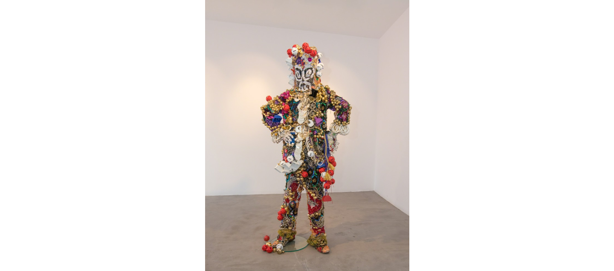
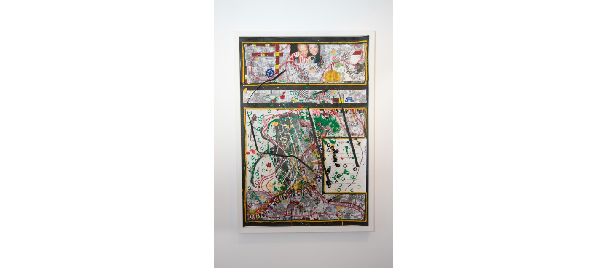
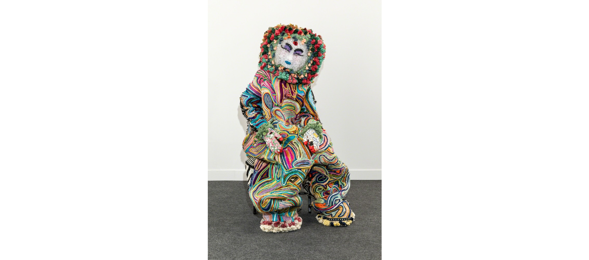
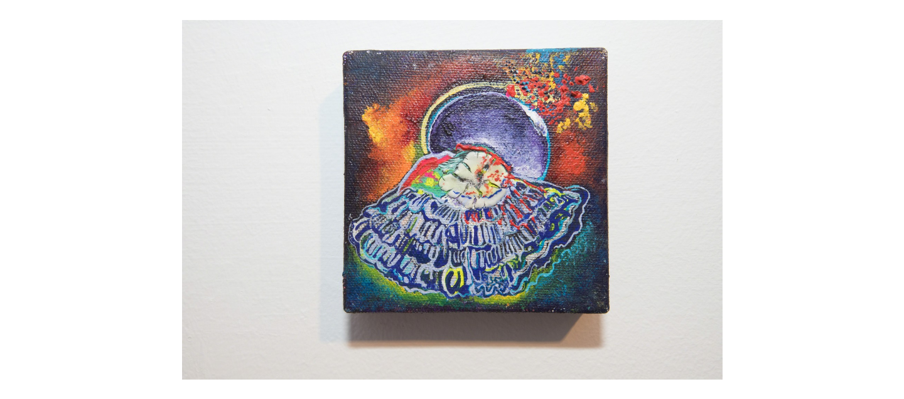

Raúl de Nieves
Raúl de Nieves was born in 1983 in Michoacán, Mexico and lives and works in New York. De Nieves, who works in sculpture and performance, attributes his art practice to his childhood education in Mexico, where he was taught to sew and crochet. He makes intricate sculptures using plastic beads that require intensive manual labor, and has gained recognition in both the art and fashion worlds.

Ceremonial Alien of Metal Exits IV, 2018
Vintage Sequin Appliques, thread, glue, plastic beads, plastic dolls, ribbons, cardboard
72 × 32 3/10 × 20 1/10 in
183 × 82 × 51 cm

Excerpts from Vida Perfectas (4), 2018
Photocopies, Acrylic, Glitter, Beads, Yarn, Glue on paper
36 1/5 × 24 in
92 × 61 cm

MIRROR/MIC/KNIFE, 2018
Cotton, wool, treads, plastic beads, cardboard, vintage trims
66 9/10 × 23 3/5 × 15 7/10 in
170 × 60 × 40 cm

The Moon, 2018
Acrylic, Tempura, medium on canvas
3 9/10 × 3 9/10 × 1 1/5 in
10 × 10 × 3 cm